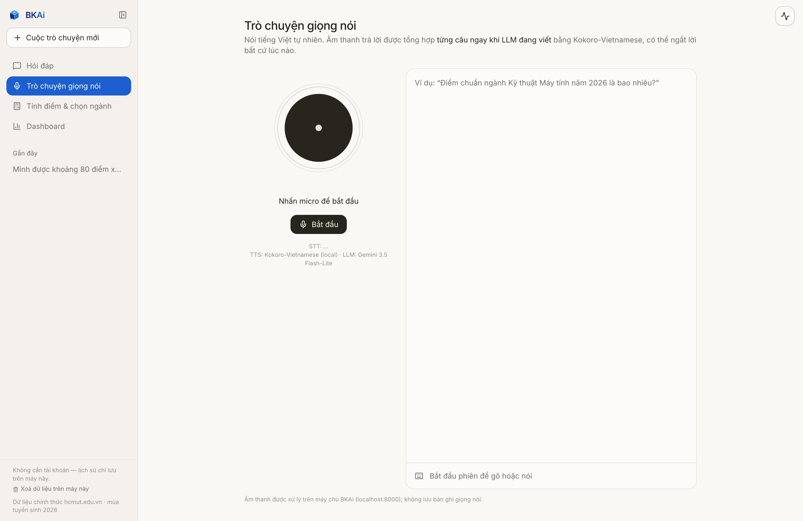
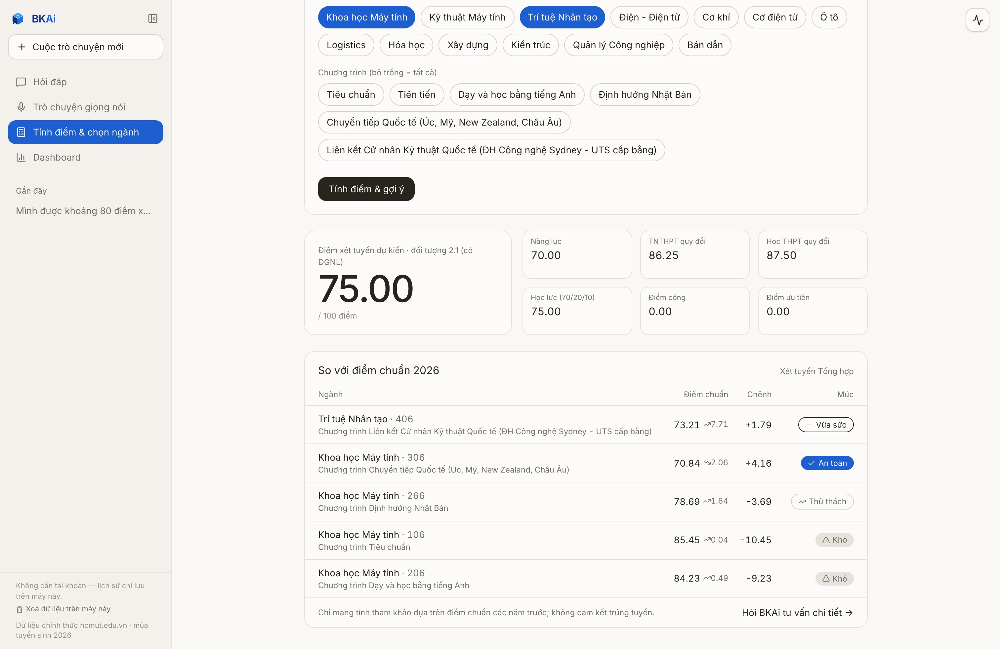
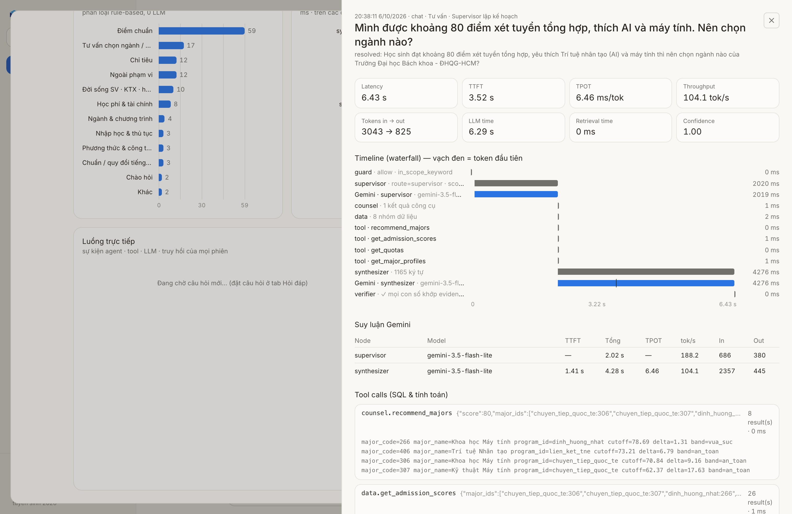

<!doctype html>
<html lang="en">
<head>
<meta charset="utf-8" />
<title>BKAi — Film</title>
<style>
  /* Landing tokens: eggshell canvas, graphite ink, one Source Blue. 1920×1080 stage. */
  @font-face { font-family: "Instrument Sans"; font-weight: 500; src: url("../node_modules/@fontsource/instrument-sans/files/instrument-sans-latin-500-normal.woff2") format("woff2"); }
  @font-face { font-family: "Instrument Sans"; font-weight: 500; src: url("../node_modules/@fontsource/instrument-sans/files/instrument-sans-latin-ext-500-normal.woff2") format("woff2"); unicode-range: U+0100-02AF, U+1E00-1EFF, U+2020, U+20A0-20AB, U+20AD-20C0, U+2113, U+2C60-2C7F, U+A720-A7FF; }
  @font-face { font-family: "Inter"; font-weight: 100 900; src: url("../node_modules/@fontsource-variable/inter/files/inter-latin-wght-normal.woff2") format("woff2"); }
  @font-face { font-family: "Inter"; font-weight: 100 900; src: url("../node_modules/@fontsource-variable/inter/files/inter-latin-ext-wght-normal.woff2") format("woff2"); unicode-range: U+0100-02BA, U+02BD-02C5, U+02C7-02CC, U+02CE-02D7, U+02DD-02FF, U+0304, U+0308, U+0329, U+1D00-1DBF, U+1E00-1E9F, U+1EF2-1EFF, U+2020, U+20A0-20AB, U+20AD-20C0, U+2113, U+2C60-2C7F, U+A720-A7FF; }
  @font-face { font-family: "Inter"; font-weight: 100 900; src: url("../node_modules/@fontsource-variable/inter/files/inter-vietnamese-wght-normal.woff2") format("woff2"); unicode-range: U+0102-0103, U+0110-0111, U+0128-0129, U+0168-0169, U+01A0-01A1, U+01AF-01B0, U+0300-0301, U+0303-0304, U+0308-0309, U+0323, U+0329, U+1EA0-1EF9, U+20AB; }
  :root { --canvas:#fdfcfb; --cloud:#f7f7f7; --paper:#f0f0ea; --linen:#e4ded3; --ink:#1d1d1f; --copy:#454545; --quiet:#6a6972; --ash:#a8a8a8; --blue:#1f6fe0;
          --app:#faf8f5; --app-ink:#27251e; --app-side:#f3f1ec; --teal:#1d5fd1; --navy:#0d2f86; --sky:#3aa0f0; --app-quiet:#92918b; }
  * { box-sizing: border-box; margin: 0; padding: 0; }
  html, body { width: 1920px; height: 1080px; overflow: hidden; background: var(--canvas); }
  body { font-family: "Inter", system-ui, sans-serif; color: var(--ink); -webkit-font-smoothing: antialiased; }
  #stage { position: relative; width: 1920px; height: 1080px; overflow: hidden; background: var(--canvas); }
  .layer { position: absolute; inset: 0; will-change: transform, opacity; }
  .center { display: flex; align-items: center; justify-content: center; flex-direction: column; text-align: center; }
  .w { display: inline-block; will-change: transform, opacity, filter; }
  .display { font-family: "Instrument Sans", sans-serif; font-weight: 500; letter-spacing: -0.035em; line-height: 1.08; }
  .tnum { font-variant-numeric: tabular-nums; }
  .sub { color: var(--quiet); }

  /* number chips (the hook) */
  .chip { position: absolute; left: 0; top: 0; padding: 14px 22px; border-radius: 999px; background: #fff; box-shadow: 0 0 0 1px rgba(0,0,0,0.07), 0 10px 30px rgba(0,0,0,0.06); font-weight: 600; font-size: 30px; white-space: nowrap; font-variant-numeric: tabular-nums; }
  .chip small { font-weight: 500; color: var(--quiet); font-size: 0.72em; margin-left: 8px; }
  .dot { position: absolute; width: 30px; height: 30px; margin: -15px 0 0 -15px; border-radius: 50%; background: var(--blue); }

  /* painterly field behind the product */
  #field { position: absolute; left: 70px; right: 70px; top: 250px; bottom: -30px; border-radius: 28px; overflow: hidden;
    background: radial-gradient(1000px 600px at 72% 70%, rgba(255,200,150,0.5), rgba(255,214,180,0) 70%), linear-gradient(180deg, #cfe1f4 0%, #e9eef2 45%, #fbeee2 74%, #f6e3d3 100%); }
  #field svg { position: absolute; left: -5%; width: 110%; bottom: 0; }

  /* MacBook (ported from the Weatherise landing) */
  .mac { position: absolute; transform-origin: 50% 100%; }
  .mac .lid { margin: 0 auto; width: 86%; border-radius: 2.4%/3.6%; padding: 0.22%; background: linear-gradient(180deg,#a5a7ab,#6d6f73 40%,#56585c); }
  .mac .bezel { position: relative; border-radius: 2.2%/3.4%; background: #060607; padding: 1.55% 1.55% 2.2%; }
  .mac .screen { position: relative; overflow: hidden; border-radius: 1.1%/1.7% 1.1%/1.7% 0.4%/0.6% 0.4%/0.6%; background: var(--app); aspect-ratio: 1512 / 982; }
  .mac .notch { position: absolute; left: 50%; top: 0; height: 4.1%; width: 11.5%; transform: translateX(-50%); border-radius: 0 0 14%/36% 14%/36%; background: #060607; z-index: 5; }
  .mac .hinge { margin: 0 auto; height: 7px; width: 80%; background: linear-gradient(180deg,#3a3b3e,#141415); }
  .mac .base { position: relative; height: 18px; border-radius: 0 0 2.2%/90% 2.2%/90%; background: linear-gradient(180deg,#f4f5f6 0%,#dadbdd 18%,#c3c5c8 55%,#9c9ea2 82%,#77797d 100%); box-shadow: inset 0 1px 0 rgba(255,255,255,0.9); }
  .mac .scoop { position: absolute; left: 50%; top: 0; height: 52%; width: 15%; transform: translateX(-50%); border-radius: 0 0 18%/100% 18%/100%; background: linear-gradient(180deg,#9fa1a5,#c6c8cb 70%,#d9dadc); }
  .mac .shadow { margin: 6px auto 0; height: 26px; width: 92%; border-radius: 50%; background: radial-gradient(closest-side, rgba(16,16,16,0.22), transparent); filter: blur(3px); }
  .glare { position: absolute; inset: 0; pointer-events: none; z-index: 4; }
  .page { position: absolute; left: 0; top: 0; width: 1512px; height: 982px; transform-origin: 0 0; will-change: transform, opacity; }
  .page > img { position: absolute; left: 0; top: 0; width: 1512px; height: 982px; }

  /* app replica (chat page, 1512 × 982 css px like the real app) */
  .app { font-family: "Inter", sans-serif; color: var(--app-ink); background: var(--app); }
  .side { position: absolute; left: 0; top: 0; bottom: 0; width: 256px; background: var(--app-side); border-right: 1px solid rgba(0,0,0,0.06); padding: 18px 14px; }
  .side .brand { display: flex; align-items: center; gap: 10px; font-weight: 600; font-size: 17px; padding: 2px 6px 16px; }
  .side .new { border: 1px solid rgba(0,0,0,0.12); background: rgba(255,255,255,0.7); border-radius: 12px; padding: 10px 14px; font-size: 15px; }
  .side .nav { margin-top: 14px; display: grid; gap: 4px; font-size: 15px; }
  .side .nav div { padding: 10px 14px; border-radius: 12px; color: #72706b; }
  .side .nav .on { background: var(--teal); color: #fff; }
  .col { position: absolute; left: 504px; width: 760px; }
  .q { position: absolute; right: 248px; top: 36px; max-width: 560px; background: #efece6; border-radius: 20px 20px 6px 20px; padding: 14px 20px; font-size: 17px; line-height: 1.5; }
  .trace { top: 150px; border: 1px solid rgba(0,0,0,0.08); border-radius: 18px; background: rgba(255,255,255,0.6); padding: 14px 20px; }
  .trace h6 { font-size: 14px; font-weight: 500; color: #72706b; display: flex; gap: 8px; align-items: center; }
  .trace h6 b { color: var(--app-ink); font-weight: 600; }
  .step { display: flex; align-items: center; gap: 12px; font-size: 15px; height: 33px; }
  .step .ck { width: 20px; height: 20px; border-radius: 50%; display: flex; align-items: center; justify-content: center; }
  .step .nm { font-weight: 600; }
  .step .sb { color: var(--app-quiet); font-size: 14px; }
  .step .ms { margin-left: auto; color: var(--app-quiet); font-variant-numeric: tabular-nums; font-size: 14px; }
  .srcs { top: 420px; display: flex; gap: 8px; }
  .src { flex: 1; border: 1px solid rgba(0,0,0,0.08); border-radius: 12px; background: rgba(255,255,255,0.75); padding: 9px 11px; font-size: 13px; }
  .src i { display: block; font-style: normal; color: var(--app-quiet); font-size: 12px; }
  .ans { top: 500px; font-size: 17px; line-height: 1.65; }
  .row { display: flex; align-items: baseline; gap: 12px; margin-top: 6px; }
  .band { font-size: 13px; font-weight: 600; border-radius: 999px; padding: 2px 10px; white-space: nowrap; }
  .band.safe { background: var(--teal); color: #fff; }
  .band.match { box-shadow: inset 0 0 0 1.5px var(--teal); color: var(--teal); }
  .band.reach { box-shadow: inset 0 0 0 1.5px rgba(0,0,0,0.18); color: #72706b; }
  .cite { display: inline-flex; align-items: center; justify-content: center; min-width: 22px; height: 22px; border-radius: 999px; background: #e9e6df; font-size: 13px; font-weight: 600; margin-left: 6px; }
  .verified { margin-top: 12px; display: inline-flex; align-items: center; gap: 8px; border-radius: 999px; background: rgba(29,95,209,0.1); color: var(--teal); font-size: 14px; font-weight: 600; padding: 6px 14px; }
  .composer { top: 860px; height: 84px; border: 1px solid rgba(0,0,0,0.12); border-radius: 22px; background: rgba(255,255,255,0.85); display: flex; align-items: center; gap: 12px; padding: 0 16px 0 22px; font-size: 18px; }
  .composer .send { margin-left: auto; width: 42px; height: 42px; border-radius: 50%; display: flex; align-items: center; justify-content: center; }
  .caret { display: inline-block; width: 2px; height: 1.1em; vertical-align: -0.18em; background: var(--blue); margin-left: 2px; }
  .empty { top: 300px; text-align: center; }
  .empty h1 { font-size: 34px; font-weight: 500; letter-spacing: -0.02em; }
  .empty p { margin-top: 10px; color: #72706b; font-size: 17px; }

  /* overlays */
  .card { position: absolute; background: #fff; border-radius: 18px; box-shadow: 0 0 0 1px rgba(0,0,0,0.06), 0 24px 60px rgba(0,0,0,0.12); }
  .ring { position: absolute; border-radius: 14px; box-shadow: 0 0 0 4px var(--blue), 0 0 0 14px rgba(31,111,224,0.16); pointer-events: none; }
  #link { position: absolute; inset: 0; pointer-events: none; }
  .pwrap { position: absolute; inset: 0; transform-origin: 50% 50%; will-change: transform, opacity, filter; }
  .mask { display: inline-block; overflow: hidden; vertical-align: bottom; padding-bottom: 8px; }
  .ftitle { font-family: "Instrument Sans", sans-serif; font-weight: 500; font-size: 64px; letter-spacing: -0.03em; }

  #subs { position: absolute; left: 50%; bottom: 46px; transform: translateX(-50%); max-width: 1500px; padding: 12px 26px; border-radius: 14px; background: rgba(46,46,46,0.82); color: #fff; font-size: 32px; font-weight: 500; line-height: 1.3; text-align: center; opacity: 0; z-index: 50; }
</style>
</head>
<body>
<div id="stage"></div>
<div id="subs"></div>
<script src="build/timeline.js"></script>
<script>
// ─── Math & easing ──────────────────────────────────────────────────────────
const clamp = (v, a = 0, b = 1) => Math.min(b, Math.max(a, v));
const lerp = (a, b, p) => a + (b - a) * p;
const prog = (t, a, b) => clamp((t - a) / (b - a));
const eOut = (p) => 1 - Math.pow(1 - p, 4);
const eExpo = (p) => (p >= 1 ? 1 : 1 - Math.pow(2, -10 * p));
const eInOut = (p) => (p < 0.5 ? 16 * p ** 5 : 1 - Math.pow(-2 * p + 2, 5) / 2);
const eIn = (p) => p * p * p;
const spring = (p) => (p <= 0 ? 0 : p >= 1 ? 1 : 1 - Math.exp(-6.5 * p) * Math.cos(8.5 * p));
const win = (t, a, b, fi = 0.4, fo = 0.4) => Math.min(eOut(prog(t, a, a + fi)), 1 - eIn(prog(t, b - fo, b)));

// ─── Timeline from the voiceover ────────────────────────────────────────────
const TL = window.TIMELINE;
const L = Object.fromEntries(TL.lines.map((l) => [l.id, l]));
const wordAt = (id, w) => { const l = L[id]; const i = l.text.indexOf(w); return l.start + (l.end - l.start) * (i / l.text.length); };
const next = (id) => { const i = TL.lines.findIndex((l) => l.id === id); return TL.lines[i + 1] ? TL.lines[i + 1].start : TL.duration; };
const DUR = TL.duration;
const S = Object.fromEntries(TL.lines.map((l) => [l.id, l.start]));

// ─── DOM helpers ────────────────────────────────────────────────────────────
const stage = document.getElementById("stage");
const el = (html, parent = stage) => { const d = document.createElement("div"); d.innerHTML = html.trim(); const n = d.firstChild; parent.appendChild(n); return n; };
const set = (n, o) => { n.style.opacity = o.o ?? 1; n.style.transform = `translate(${o.x ?? 0}px,${o.y ?? 0}px) scale(${o.s ?? 1}) rotate(${o.r ?? 0}deg)`; n.style.filter = o.b ? `blur(${o.b}px)` : "none"; n.style.visibility = (o.o ?? 1) <= 0.001 ? "hidden" : "visible"; };
function words(lines, size, extra = "") {
  const html = lines.map((ln) => `<div>${ln.split(" ").map((w) => `<span class="w">${w}</span>`).join(" ")}</div>`).join("");
  const n = el(`<div class="layer center"><div class="display" style="font-size:${size}px;${extra}">${html}</div></div>`);
  n.ws = [...n.querySelectorAll(".w")];
  return n;
}
function reveal(n, t, start, per = 0.08, dur = 0.75, out = null) {
  n.ws.forEach((w, i) => { const p = eExpo(prog(t, start + i * per, start + i * per + dur)); set(w, { o: p, y: (1 - p) * 50, b: (1 - p) * 14 }); });
  if (out) { const q = eIn(prog(t, out[0], out[1])); n.style.opacity = 1 - q; n.style.transform = `translateY(${-q * 40}px) scale(${1 - q * 0.04})`; n.style.filter = q > 0 ? `blur(${q * 10}px)` : "none"; }
}
/** Count up to the first number in `text`, keeping the rest ("8/8", "15×", "74"). */
function odometer(host, text, p) {
  const m = text.match(/\d+(?:\.\d+)?/);
  const q = eOut(clamp(p));
  const out = m ? text.replace(m[0], (parseFloat(m[0]) * q).toFixed((m[0].split(".")[1] || "").length)) : text;
  if (host.textContent !== out) host.textContent = out;
  host.style.opacity = clamp(p * 3);
}
const CHECK = `<svg width="12" height="12" viewBox="0 0 24 24" fill="none" stroke="#fff" stroke-width="4" stroke-linecap="round" stroke-linejoin="round"><path d="M20 6 9 17l-5-5"/></svg>`;
const CUBE = { top: "M32 5 55.4 18.5 32 32 8.6 18.5Z", left: "M8.6 18.5 32 32v27l-12.4-7.2-9.4 5.8 2.4-9.8-4-2.3Z", right: "M32 32 55.4 18.5v27L32 59Z",
  seam: "M32 5 55.4 18.5 32 32 8.6 18.5ZM32 32v27M32 32l23.4-13.5", spark: "M32 11.5c.6 4.1 1.6 5.1 5.7 6.1-4.1 1-5.1 2-5.7 6.1-.6-4.1-1.6-5.1-5.7-6.1 4.1-1 5.1-2 5.7-6.1Z" };
const MARK = (size, id = "") => `<svg ${id} width="${size}" height="${size}" viewBox="0 0 64 64" style="overflow:visible"><path class="ft" d="${CUBE.top}" fill="#3aa0f0"/><path class="fl" d="${CUBE.left}" fill="#0d2f86"/><path class="fr" d="${CUBE.right}" fill="#1f6fe0"/><path class="sm" d="${CUBE.seam}" fill="none" stroke="#fff" stroke-width="1.6" stroke-linejoin="round"/><path class="sp" d="${CUBE.spark}" fill="#fff"/></svg>`;
const WORD = (size, id = "") => `<span ${id} class="display" style="font-size:${size}px;font-family:Inter;font-weight:700;letter-spacing:-0.045em"><span style="color:#0d2f86">BK</span><span style="color:#1f6fe0">Ai</span></span>`;
/** Three faces fly in, the seams draw, the AI spark pops: the logo's own motion. */
function assemble(svg, t, t0) {
  const face = (sel, dx, dy, d) => {
    const p = eExpo(prog(t, t0 + d, t0 + d + 0.75)), n = svg.querySelector(sel);
    n.style.transform = `translate(${(1 - p) * dx}px, ${(1 - p) * dy}px)`; n.style.opacity = clamp(p * 1.6);
  };
  face(".ft", 0, -18, 0); face(".fl", -16, 10, 0.1); face(".fr", 16, 10, 0.2);
  svg.querySelector(".sm").style.opacity = eOut(prog(t, t0 + 0.55, t0 + 0.95));
  const sp = spring(prog(t, t0 + 0.6, t0 + 1.35)), spk = svg.querySelector(".sp");
  spk.style.transformOrigin = "32px 17.6px"; spk.style.transform = `scale(${sp}) rotate(${(1 - clamp(sp)) * -140}deg)`;
}

// ─── Act 1: hook ────────────────────────────────────────────────────────────
const blobA = el(`<div style="position:absolute;width:1500px;height:1100px;left:-560px;top:-520px;border-radius:50%;background:radial-gradient(closest-side, rgba(31,111,224,0.08), rgba(31,111,224,0))"></div>`);
const blobB = el(`<div style="position:absolute;width:1500px;height:1100px;right:-560px;bottom:-560px;border-radius:50%;background:radial-gradient(closest-side, rgba(246,190,150,0.16), rgba(246,190,150,0))"></div>`);
const dot = el(`<div class="dot" style="left:960px;top:330px"></div>`);
const h1 = words(["Choosing a university", "is a big decision."], 112);
const h2 = words(["And the numbers", "are everywhere."], 104);

// Real figures from the knowledge base (2026 unless noted).
const CHIPS = [["85.45", "106"], ["84.23", "206"], ["78.69", "266"], ["73.21", "406"], ["70.84", "306"], ["62.37", "307"], ["79.30", "142"], ["84.97", "146"], ["80.68", "251"],
  ["5,685", "chỉ tiêu"], ["IELTS 6.5 → 8.5", ""], ["31.500.000 đ", "/ năm"], ["ĐGNL 1050", ""], ["85.41", "2025"], ["84.16", "2024"], ["79.84", "2023"], ["76.34", "142 · 2025"], ["68.73", "142 · 2023"], ["TH", "UTXT"], ["74", "mã ngành"]];
const SLOTS = [[180, 150], [560, 90], [1380, 110], [1720, 210], [120, 420], [1800, 470], [260, 700], [1660, 760], [520, 930], [1300, 950], [880, 70], [930, 1010], [90, 920], [1840, 960], [380, 280], [1530, 330], [330, 560], [1600, 600], [740, 820], [1150, 840]];
const chipEls = CHIPS.map(([a, b], i) => { const n = el(`<div class="chip">${a}${b ? `<small>${b}</small>` : ""}</div>`); n.pos = SLOTS[i]; n.depth = 0.6 + ((i * 37) % 10) / 20; return n; });

// Act 1b: 74 · 9 · cut-offs that move
const stats = el(`<div class="layer"></div>`);
const st1 = el(`<div style="position:absolute;left:250px;top:330px;width:420px;text-align:center"><div class="display tnum" id="o74" style="font-size:230px;display:flex;justify-content:center"></div><div style="font-size:34px;font-weight:600;margin-top:14px">admission codes</div></div>`, stats);
const st2 = el(`<div style="position:absolute;left:750px;top:330px;width:420px;text-align:center"><div class="display tnum" id="o9" style="font-size:230px;display:flex;justify-content:center"></div><div style="font-size:34px;font-weight:600;margin-top:14px">programs</div></div>`, stats);
const CUT = [[2023, 68.73], [2024, 78.22], [2025, 76.34], [2026, 79.3]];
const cx = (i) => 30 + i * 120, cy = (v) => 230 - (v - 64) * 11;
const path = CUT.map(([, v], i) => `${i ? "L" : "M"}${cx(i)},${cy(v)}`).join(" ");
const st3 = el(`<div style="position:absolute;left:1260px;top:330px;width:440px">
  <svg width="440" height="270" viewBox="0 0 440 270" style="overflow:visible">
    <path id="cl" d="${path}" fill="none" stroke="#2e2e2e" stroke-width="5" stroke-linecap="round" stroke-linejoin="round"/>
    ${CUT.map(([y, v], i) => `<g class="pt" opacity="0"><circle cx="${cx(i)}" cy="${cy(v)}" r="9" fill="${i === 3 ? "#1f6fe0" : "#2e2e2e"}"/><text x="${cx(i)}" y="${cy(v) - 22}" text-anchor="middle" font-size="26" font-weight="600" font-family="Inter">${v.toFixed(2)}</text><text x="${cx(i)}" y="262" text-anchor="middle" font-size="22" fill="#6a6972" font-family="Inter">${y}</text></g>`).join("")}
  </svg>
  <div style="font-size:34px;font-weight:600;margin-top:10px;text-align:center">cut-offs that move</div>
  <div class="sub" style="font-size:22px;text-align:center;margin-top:4px">Automotive Engineering · 142</div></div>`, stats);
const o74 = st1.querySelector("#o74"), o9 = st2.querySelector("#o9");
const cl = st3.querySelector("#cl"); const clLen = cl.getTotalLength(); cl.style.strokeDasharray = clLen;
const pts = [...st3.querySelectorAll(".pt")];

const r1 = words(["So I built a counselor", "that knows every one of them."], 88);

// ─── Act 2: brand ───────────────────────────────────────────────────────────
const glow = el(`<div style="position:absolute;width:420px;height:420px;margin:-210px 0 0 -210px;border-radius:50%;background:radial-gradient(closest-side, rgba(58,160,240,0.42), rgba(58,160,240,0))"></div>`);
const brand = el(`<div class="layer center" style="z-index:20"><div id="lock" style="display:flex;align-items:center;gap:40px">${MARK(210, 'id="bm"')}${WORD(184, 'id="bw"')}</div></div>`);
const bm = brand.querySelector("#bm"), bw = brand.querySelector("#bw");

// ─── Act 3: product ─────────────────────────────────────────────────────────
const field = el(`<div id="field"><svg viewBox="0 0 1000 200" preserveAspectRatio="none" height="300">
  <path d="M0 120 C 150 80 260 140 420 110 S 720 70 1000 110 L1000 200 L0 200Z" fill="rgba(196,214,190,0.8)"/>
  <path d="M0 150 C 180 120 300 170 520 140 S 820 120 1000 150 L1000 200 L0 200Z" fill="rgba(170,198,165,0.85)"/>
  <path d="M0 178 C 200 160 380 190 600 170 S 880 165 1000 180 L1000 200 L0 200Z" fill="rgba(150,184,146,0.9)"/></svg></div>`);

const MAC_W = 1240;
const mac = el(`<div class="mac" style="left:${(1920 - MAC_W) / 2}px;top:0;width:${MAC_W}px">
  <div class="lid"><div class="bezel"><div class="screen" id="screen">
    <div class="page app" id="pChat">
      <div class="side"><div class="brand" id="sideBrand">${MARK(24)}<span><span style="color:#0d2f86">BK</span><span style="color:#1d5fd1">Ai</span></span></div><div class="new">+&nbsp; Cuộc trò chuyện mới</div>
        <div class="nav"><div class="on">Hỏi đáp</div><div>Trò chuyện giọng nói</div><div>Tính điểm &amp; chọn ngành</div><div>Dashboard</div></div></div>
      <div class="col empty" id="empty"><h1>Hỏi BKAi về tuyển sinh Bách khoa</h1><p>Điểm chuẩn · chỉ tiêu · học phí · tính điểm xét tuyển</p></div>
      <div class="q" id="q">Mình được khoảng 80 điểm xét tuyển tổng hợp, thích AI và máy tính. Nên chọn ngành nào?</div>
      <div class="col trace" id="trace"><h6><b>Cách BKAi tìm câu trả lời</b> · 2 tác tử · 4 công cụ</h6><div id="steps" style="margin-top:6px"></div></div>
      <div class="col srcs" id="srcs"></div>
      <div class="col ans" id="ans"></div>
      <div class="col composer" id="comp"><span id="ctext" style="color:#92918b">Hỏi về điểm chuẩn, chỉ tiêu, học phí...</span><span class="send" id="send"><svg width="18" height="18" viewBox="0 0 24 24" fill="none" stroke="currentColor" stroke-width="2.4" stroke-linecap="round" stroke-linejoin="round"><path d="M12 19V5M5 12l7-7 7 7"/></svg></span></div>
    </div>
    <div class="page" id="pVoice">
      <div style="position:absolute;left:770px;top:140px;width:530px;height:120px;background:#fbfaf8"></div>
      <div id="vq" style="position:absolute;left:782px;top:146px;width:500px;font-size:16px;line-height:1.5"></div>
      <div id="va" style="position:absolute;left:782px;top:240px;width:500px;font-size:15px;line-height:1.55;color:#454545"></div>
      <div id="orbFx" style="position:absolute;left:600px;top:240px"></div>
      <div id="barge" style="position:absolute;left:520px;top:330px;width:160px;text-align:center"></div>
    </div>
    <div class="page" id="pCoun"></div>
    <div class="page" id="pTrace"><div id="scan" style="position:absolute;left:668px;width:830px;height:24px;border-radius:6px;background:rgba(31,111,224,0.12);box-shadow:0 0 0 2px rgba(31,111,224,0.5)"></div></div>
    <div class="glare" id="glare"></div>
  </div><div class="notch"></div></div></div>
  <div class="hinge"></div><div class="base"><div class="scoop"></div></div><div class="shadow"></div></div>`);
const screen = mac.querySelector("#screen");
const pages = { chat: mac.querySelector("#pChat"), voice: mac.querySelector("#pVoice"), coun: mac.querySelector("#pCoun"), trace: mac.querySelector("#pTrace") };
const glare = mac.querySelector("#glare");
const sideBrand = mac.querySelector("#sideBrand");
const wraps = {};
Object.entries(pages).forEach(([k, pg]) => { const w = document.createElement("div"); w.className = "pwrap"; pg.parentNode.insertBefore(w, pg); w.appendChild(pg); wraps[k] = w; });
const FTS = [["f1", "Ask anything, in Vietnamese."], ["f2", "A team of AI agents. About two seconds."], ["f3", "Every number, with its source."], ["f4", "Rather talk? Just speak."], ["f5", "It remembers you."], ["f6", "Every answer, traced."]].map(([id, txt]) => {
  const n = el(`<div class="layer center" style="justify-content:flex-start;padding-top:92px"><div class="ftitle">${txt.split(" ").map((w) => `<span class="mask"><span class="w">${w}</span></span>`).join(" ")}</div></div>`);
  n.ws = [...n.querySelectorAll(".w")]; n.fid = id; return n;
});

// chat contents
const QTEXT = "Mình được khoảng 80 điểm xét tuyển tổng hợp, thích AI và máy tính. Nên chọn ngành nào?";
const STEPS = [["Guardrails", "allow · in scope", "0 ms"], ["Supervisor", "intents: counsel, facts", "1.2 s"], ["Counsel agent", "recommend_majors · score 80", "1 ms"], ["Data agent", "get_admission_scores · 26 rows", "1 ms"], ["Synthesizer", "viết câu trả lời có trích dẫn", "4.0 s"], ["Verifier", "mọi con số khớp evidence", "0 ms"]];
const stepsHost = mac.querySelector("#steps");
const stepEls = STEPS.map(([n, s, ms]) => el(`<div class="step"><span class="ck" style="border:1.5px solid rgba(29,95,209,0.35)"></span><span class="nm">${n}</span><span class="sb">${s}</span><span class="ms">${ms}</span></div>`, stepsHost));
const srcHost = mac.querySelector("#srcs");
["Khoa học Máy tính (306)", "Kỹ thuật Máy tính (307)", "Khoa học Máy tính (266)", "Trí tuệ Nhân tạo (406)", "Khoa học Máy tính (106)"].forEach((s, i) => el(`<div class="src"><i>[${i + 1}] hcmut.edu.vn</i>${s}</div>`, srcHost));
const ansHost = mac.querySelector("#ans");
const INTRO = "Với khoảng 80 điểm và yêu thích AI, đây là các lựa chọn so với điểm chuẩn Xét tuyển Tổng hợp 2026:";
const ROWS = [["Vừa sức", "match", "Khoa học Máy tính · 266 (Định hướng Nhật Bản)", "78.69", 3], ["An toàn", "safe", "Trí tuệ Nhân tạo · 406 (Liên kết UTS)", "73.21", 4], ["An toàn", "safe", "Khoa học Máy tính · 306 (Chuyển tiếp Quốc tế)", "70.84", 1], ["Thử thách", "reach", "Khoa học Máy tính · 106 (Tiêu chuẩn)", "85.45", 5]];
const introEl = el(`<div></div>`, ansHost);
const rowEls = ROWS.map(([b, tone, txt, sc, c]) => { const n = el(`<div class="row"><span class="band ${tone}">${b}</span><span style="font-weight:600" class="rt"></span><span class="tnum rs"></span><span class="cite">${c}</span></div>`, ansHost); n.d = { txt, sc }; return n; });
const verEl = el(`<div class="verified">${CHECK.replace('stroke="#fff"', 'stroke="#1d5fd1"')} Mọi con số đã được kiểm chứng · 6.2 s</div>`, ansHost);
const TOTAL = INTRO.length + ROWS.reduce((n, r) => n + r[2].length + r[3].length, 0);

// floating source card (f3)
const srcCard = el(`<div class="card" style="left:1490px;top:440px;width:400px;padding:24px 26px">
  <div style="display:flex;align-items:center;gap:10px;font-size:18px;color:#6a6972"><span style="display:inline-flex;width:28px;height:28px;border-radius:50%;background:#e9e6df;align-items:center;justify-content:center;font-weight:700;color:#2e2e2e;font-size:15px">3</span>hcmut.edu.vn · official</div>
  <div style="font-size:24px;font-weight:600;margin-top:12px;line-height:1.3">Khoa học Máy tính · 266</div>
  <div class="sub" style="font-size:18px;margin-top:2px">Định hướng Nhật Bản · Xét tuyển Tổng hợp</div>
  <div style="display:flex;justify-content:space-between;align-items:baseline;margin-top:18px;border-top:1px solid rgba(0,0,0,0.08);padding-top:14px"><span class="sub" style="font-size:18px">Cut-off 2026</span><span class="display tnum" style="font-size:44px">78.69</span></div>
  <div style="margin-top:10px;display:inline-flex;align-items:center;gap:8px;border-radius:999px;background:rgba(29,95,209,0.1);color:#1d5fd1;font-size:16px;font-weight:600;padding:5px 12px">${CHECK.replace('stroke="#fff"', 'stroke="#1d5fd1"')} matches the answer</div></div>`);
const link = el(`<svg id="link" width="1920" height="1080"><path id="lk" fill="none" stroke="#1f6fe0" stroke-width="3" stroke-dasharray="6 8" stroke-linecap="round"/><circle id="lkd" r="7" fill="#1f6fe0"/></svg>`);
const lk = link.querySelector("#lk"), lkd = link.querySelector("#lkd");
const ring = el(`<div class="ring"></div>`);

// ─── Act 4: proof ───────────────────────────────────────────────────────────
const PROOF = [
  { id: "n1", big: "8/8", label: "real admission cases, correct", sub: "easy · medium · hard · out of scope" },
  { id: "n2", big: "200/200", label: "numbers, exactly right", sub: "cut-offs and quotas, 2024–2026 · every one verified" },
  { id: "n3", big: "15×", label: "faster than the previous version", sub: "median answer 27.3 s → 1.79 s" },
];
const proofs = PROOF.map((p) => { const n = el(`<div class="layer center"><div class="display tnum odo" style="font-size:270px;letter-spacing:-0.05em;display:flex;align-items:baseline;line-height:1"></div><div style="font-size:50px;font-weight:600;margin-top:26px;letter-spacing:-0.01em">${p.label}</div><div class="sub" style="font-size:28px;margin-top:12px">${p.sub}</div></div>`); n.odo = n.querySelector(".odo"); n.p = p; return n; });
const proofFoot = el(`<div class="layer center" style="justify-content:flex-end;padding-bottom:70px"><div class="sub" style="font-size:22px">Measured by committed benchmarks · BKAi v5 · October 2026</div></div>`);

// ─── Act 5: end card ────────────────────────────────────────────────────────
const end = el(`<div class="layer center"><div style="display:flex;align-items:center;gap:32px">${MARK(160, 'id="em"')}${WORD(150, 'id="ew"')}</div></div>`);
const em = end.querySelector("#em"), ew = end.querySelector("#ew");
const tag = el(`<div class="layer center" style="padding-top:330px"><div class="display" style="font-size:60px"><span class="w">Every</span> <span class="w">number</span> <span class="w">has</span> <span class="w">a</span> <span class="w" style="color:#1f6fe0">source.</span></div><div class="sub" id="foot" style="font-size:24px;margin-top:40px">Built by Long Quan Ton · github.com/BennedictQuanTon/BKAi-Admission-System</div></div>`);
tag.ws = [...tag.querySelectorAll(".w")];
const foot = tag.querySelector("#foot");

const subs = document.getElementById("subs");
const SHOW_SUBS = new URLSearchParams(location.search).get("subs") === "1";

// ─── Scene times ────────────────────────────────────────────────────────────
const revealT = L.r2.end + 0.35;              // brand lockup lifts, MacBook rises
const sendT = S.f1 + 2.35;                    // question sent
const streamA = S.f2 + 1.6, streamB = S.f3 + 1.4;
const verT = streamB + 0.25;
const interruptT = wordAt("f4", "interrupt");

// ─── Sound cues (read by the renderer → audio.py) ───────────────────────────
const CUES = [];
const cue = (t, s, v = 0.6) => CUES.push({ t: +t.toFixed(3), s, v });
cue(0.35, "pop", 0.55);
chipEls.forEach((_, i) => i % 3 === 0 && cue(S.h2 + 0.25 + i * 0.05, "pop", 0.22));
cue(S.h3, "hit", 0.45); cue(wordAt("h3", "Nine"), "hit", 0.4); cue(wordAt("h3", "Cut-offs"), "whoosh", 0.35);
cue(S.r1 + 0.7, "riser", 0.6);
["", 0.1, 0.2].forEach((d, i) => cue(S.r2 - 0.1 + i * 0.1, "pop", 0.4));
cue(S.r2 + 0.5, "chime", 0.85);
cue(revealT + 0.25, "whoosh", 0.55);
for (let i = 0; i < 18; i++) cue(S.f1 + 0.4 + i * 0.105, "type", 0.28);
cue(sendT, "click", 0.6);
STEPS.forEach((_, i) => cue(S.f2 - 0.15 + [0, 0.25, 0.9, 1.0, 1.15, 0][i], "tick", 0.3));
cue(verT, "confirm", 0.6);
cue(S.f3 + 1.9, "pop", 0.45);
cue(S.f4 - 0.2, "whoosh", 0.45); cue(interruptT, "pop", 0.5);
cue(S.f5 - 0.2, "whoosh", 0.45);
cue(S.f6 - 0.2, "whoosh", 0.45);
["n1", "n2", "n3"].forEach((k) => cue(S[k] - 0.05, "hit", 0.75));
[0, 0.1, 0.2].forEach((d) => cue(S.e1 - 0.2 + d, "pop", 0.35));
cue(S.e1 + 0.4, "chime", 0.8);

// layout measurements (after fonts load)
let LOCK = null, TARGET = null;
function measure() {
  brand.style.opacity = 1; brand.style.transform = "none";
  const r = bm.getBoundingClientRect();
  LOCK = { x: r.left + r.width * 32 / 64, y: r.top + r.height * 17.6 / 64, w: r.width };
  // the MacBook at rest, to find where the app's own logo sits
  mac.style.visibility = "visible"; mac.style.opacity = 1;
  mac.style.transform = `perspective(2400px) translateY(${1065 - mac.offsetHeight}px) rotateX(0deg)`;
  Object.values(wraps).forEach((w) => (w.style.transform = "none"));
  cam(pages.chat, 1);
  const sr = sideBrand.querySelector("svg").getBoundingClientRect();
  TARGET = { x: sr.left + sr.width * 32 / 64, y: sr.top + sr.height * 17.6 / 64, s: sr.width / r.width };
}

/** Camera inside the MacBook screen: show page point (cx, cy) at the screen centre, zoomed z. */
const SCR_W = MAC_W * 0.86 * (1 - 0.031) * (1 - 0.0044);
function cam(page, z, cx = 756, cy = 491) {
  const k = SCR_W / 1512;
  page.style.transform = `translate(${(756 - cx * z) * k}px, ${(491 - cy * z) * k}px) scale(${z * k})`;
}

// ═══════════════════════════════════════════════════════════════════════════
function render(t) {
  if (!LOCK) measure();
  set(blobA, { o: clamp(t / 1.2), x: Math.sin(t * 0.25) * 60, y: Math.cos(t * 0.2) * 40 });
  set(blobB, { o: clamp(t / 1.2), x: Math.cos(t * 0.22) * 60, y: Math.sin(t * 0.18) * 40 });

  // the source dot: appears, sits above the first line, then waits for the reveal
  const dIn = spring(prog(t, 0.25, 1.1));
  const dOut = eIn(prog(t, S.h2 - 0.4, S.h2));
  const conv = eInOut(prog(t, S.r1 + 0.9, S.r2 - 0.05));        // chips converge into the dot
  const dotBack = eExpo(prog(t, S.r1 + 0.6, S.r1 + 1.2));
  let dx = 960, dy = 330, ds = dIn * (1 - dOut), dO = 1;
  if (t > S.r1 + 0.5) { dx = lerp(960, LOCK.x, eInOut(prog(t, S.r1 + 0.6, S.r2 - 0.1))); dy = lerp(980, LOCK.y, eInOut(prog(t, S.r1 + 0.6, S.r2 - 0.1))); ds = dotBack * lerp(1, 1.6, conv); }
  dO = t < S.r2 + 0.55 ? 1 : 0;  // the dot becomes the cube's spark
  dot.style.left = dx + "px"; dot.style.top = dy + "px"; set(dot, { o: ds > 0.01 ? dO : 0, s: ds });

  reveal(h1, t, S.h1 - 0.05, 0.1, 0.8, [S.h2 - 0.4, S.h2 - 0.02]);
  h1.style.top = "60px";
  reveal(h2, t, S.h2 - 0.02, 0.08, 0.75, [S.h3 - 0.45, S.h3 - 0.05]);

  // chips: float in around the text, dim behind the stats, then converge into the dot
  const dim = eInOut(prog(t, S.h3 - 0.4, S.h3 + 0.3)) * (1 - eInOut(prog(t, S.r1 - 0.4, S.r1 + 0.3)));
  chipEls.forEach((c, i) => {
    const a = S.h2 + 0.2 + i * 0.06;
    const p = spring(prog(t, a, a + 0.9));
    const [sx, sy] = c.pos;
    const drift = (t - a) * 6 * c.depth;
    let x = sx + Math.sin(t * 0.3 + i) * 8 * c.depth + drift * (sx < 960 ? -1 : 1) * 0.3;
    let y = sy + Math.cos(t * 0.25 + i) * 8 * c.depth;
    const w = c.offsetWidth, h = c.offsetHeight;
    x = lerp(x, LOCK.x, conv) - w / 2; y = lerp(y, LOCK.y, conv) - h / 2;
    const o = clamp(p * 2) * lerp(1, 0.16, dim) * (1 - eIn(prog(t, S.r2 - 0.35, S.r2 - 0.05)));
    set(c, { o, x, y, s: lerp(0.7, 1, p) * lerp(1, 0.15, conv), b: dim * 3 + conv * 6 });
  });

  // 74 · 9 · moving cut-offs
  const sw = win(t, S.h3 - 0.1, S.r1 - 0.1, 0.4, 0.5);
  stats.style.opacity = sw;
  const t74 = S.h3 - 0.05, t9 = wordAt("h3", "Nine") - 0.05, tc = wordAt("h3", "Cut-offs") - 0.1;
  set(st1, { o: eOut(prog(t, t74, t74 + 0.5)), y: (1 - eExpo(prog(t, t74, t74 + 0.8))) * 40 });
  odometer(o74, "74", prog(t, t74, t74 + 1.2));
  set(st2, { o: eOut(prog(t, t9, t9 + 0.5)), y: (1 - eExpo(prog(t, t9, t9 + 0.8))) * 40 });
  odometer(o9, "9", prog(t, t9, t9 + 1.0));
  set(st3, { o: eOut(prog(t, tc, tc + 0.5)), y: (1 - eExpo(prog(t, tc, tc + 0.8))) * 40 });
  cl.style.strokeDashoffset = clLen * (1 - eInOut(prog(t, tc + 0.1, tc + 1.6)));
  pts.forEach((g, i) => g.setAttribute("opacity", eOut(prog(t, tc + 0.15 + i * 0.4, tc + 0.5 + i * 0.4))));

  reveal(r1, t, S.r1 - 0.05, 0.07, 0.75, [S.r2 - 0.4, S.r2 - 0.05]);

  // brand: the cube assembles around the spark, the word wipes in, then the logo flies into the app (match cut)
  const b0 = S.r2 - 0.1;
  assemble(bm, t, b0);
  const g = prog(t, b0 + 0.6, b0 + 1.5);
  glow.style.left = LOCK.x + "px"; glow.style.top = LOCK.y + "px";
  set(glow, { o: g > 0 && g < 1 ? (1 - g) * 0.9 : 0, s: lerp(0.2, 1.6, eOut(g)) });
  bw.style.clipPath = `inset(-10% ${(1 - eExpo(prog(t, b0 + 0.45, b0 + 1.25))) * 100}% -10% 0)`;
  const fly = eInOut(prog(t, revealT + 0.2, revealT + 1.3));
  brand.style.transformOrigin = `${LOCK.x}px ${LOCK.y}px`;
  brand.style.transform = `translate(${(TARGET.x - LOCK.x) * fly}px, ${(TARGET.y - LOCK.y) * fly}px) scale(${lerp(1, TARGET.s, fly)})`;
  brand.style.opacity = t < b0 ? 0 : 1 - eIn(prog(t, revealT + 1.15, revealT + 1.4));
  sideBrand.style.opacity = eOut(prog(t, revealT + 1.15, revealT + 1.4));

  // field + MacBook
  const up = eExpo(prog(t, revealT + 0.2, revealT + 1.6));
  const out = eInOut(prog(t, S.n1 - 0.7, S.n1 - 0.1));
  set(field, { o: up * (1 - out), y: (1 - up) * 120 + out * 80 });
  const MAC_H = mac.offsetHeight;
  const macY = 1065 - MAC_H + (1 - up) * 700 + out * 160;
  const macRX = (1 - up) * 34;
  mac.style.opacity = clamp(up * 3) * (1 - out); mac.style.visibility = up > 0 && out < 1 ? "visible" : "hidden";
  mac.style.transform = `perspective(2400px) translateY(${macY}px) rotateX(${macRX}deg)`;
  const sweep = prog(t, revealT + 1.0, revealT + 2.2);
  glare.style.background = `linear-gradient(115deg, transparent ${lerp(-40, 120, sweep) - 18}%, rgba(255,255,255,0.5) ${lerp(-40, 120, sweep)}%, transparent ${lerp(-40, 120, sweep) + 18}%), linear-gradient(115deg, rgba(255,255,255,0.07), transparent 35%)`;

  // feature titles: words rise out of a mask, then lift away for the next one
  FTS.forEach((n) => {
    const a = S[n.fid] - 0.3, b = next(n.fid) - 0.12;
    const live = t > a - 0.05 && t < b + 0.05 && up > 0.5 && out < 0.5;
    n.style.display = live ? "flex" : "none";
    if (!live) return;
    n.ws.forEach((w, i) => {
      const p = eExpo(prog(t, a + i * 0.045, a + i * 0.045 + 0.75)), q = eIn(prog(t, b - 0.35 + i * 0.02, b));
      set(w, { o: 1, y: (1 - p) * 90 - q * 90 });
    });
  });

  // screens: the outgoing view recedes and blurs while the next one settles in (push)
  const WIN = [["chat", -1, S.f4 - 0.25], ["voice", S.f4 - 0.25, S.f5 - 0.25], ["coun", S.f5 - 0.25, S.f6 - 0.25], ["trace", S.f6 - 0.25, 1e9]];
  WIN.forEach(([k, a, b]) => {
    const inP = a < 0 ? 1 : eExpo(prog(t, a, a + 0.6)), outP = eInOut(prog(t, b, b + 0.5));
    set(wraps[k], { o: clamp(inP * 1.4) * (1 - outP), s: lerp(1.07, 1, inP) * lerp(1, 0.9, outP), b: (1 - inP) * 10 + outP * 10 });
  });

  // ── chat: type → send → agents → stream → verify
  const typed = QTEXT.slice(0, Math.round(prog(t, S.f1 + 0.35, sendT - 0.2) * QTEXT.length));
  const sent = t >= sendT;
  const ctext = mac.querySelector("#ctext");
  const cnext = sent ? `<span style="color:#92918b">Hỏi tiếp...</span>` : t > S.f1 + 0.3 ? `<span>${typed}</span><span class="caret"></span>` : `<span style="color:#92918b">Hỏi về điểm chuẩn, chỉ tiêu, học phí...</span>`;
  if (ctext.innerHTML !== cnext) ctext.innerHTML = cnext;
  const send = mac.querySelector("#send");
  send.style.background = typed && !sent ? "#27251e" : "rgba(0,0,0,0.05)"; send.style.color = typed && !sent ? "#fff" : "#92918b";
  const empty = mac.querySelector("#empty");
  set(empty, { o: 1 - eOut(prog(t, sendT, sendT + 0.3)), y: -eOut(prog(t, sendT, sendT + 0.4)) * 20 });
  const qEl = mac.querySelector("#q");
  set(qEl, { o: eOut(prog(t, sendT, sendT + 0.35)), y: (1 - eExpo(prog(t, sendT, sendT + 0.5))) * 20 });
  const trace = mac.querySelector("#trace");
  set(trace, { o: eOut(prog(t, S.f2 - 0.4, S.f2)), y: (1 - eExpo(prog(t, S.f2 - 0.4, S.f2 + 0.2))) * 16 });
  const stepAt = [0, 0.25, 0.9, 1.0, 1.15, verT - S.f2 + 0.15];
  const stepDone = [0.05, 0.85, 0.95, 1.05, streamB - S.f2, verT - S.f2 + 0.2];
  stepEls.forEach((s, i) => {
    const a = S.f2 - 0.15 + stepAt[i], d = S.f2 - 0.15 + stepDone[i];
    set(s, { o: eOut(prog(t, a, a + 0.25)), x: (1 - eExpo(prog(t, a, a + 0.4))) * 14 });
    const ck = s.firstChild, done = t >= d;
    if ((ck.dataset.done === "1") !== done) { ck.dataset.done = done ? "1" : "0"; ck.style.background = done ? "#1d5fd1" : "transparent"; ck.style.border = done ? "none" : "1.5px solid rgba(29,95,209,0.35)"; ck.innerHTML = done ? CHECK : ""; }
    s.lastChild.style.opacity = done ? 1 : 0;
  });
  set(srcHost, { o: eOut(prog(t, streamA - 0.4, streamA)), y: (1 - eExpo(prog(t, streamA - 0.4, streamA + 0.2))) * 12 });
  let budget = Math.round(prog(t, streamA, streamB) * TOTAL);
  const take = (s) => { const o = s.slice(0, Math.max(0, budget)); budget -= s.length; return o; };
  const it = take(INTRO); if (introEl.textContent !== it) introEl.textContent = it;
  rowEls.forEach((r) => {
    const tx = take(r.d.txt), sc = take(r.d.sc);
    r.style.opacity = tx ? 1 : 0;
    const rt = r.querySelector(".rt"), rs = r.querySelector(".rs");
    if (rt.textContent !== tx) rt.textContent = tx;
    const sv = sc ? `— ${sc}` : ""; if (rs.textContent !== sv) rs.textContent = sv;
    r.lastChild.style.opacity = sc.length === r.d.sc.length ? 1 : 0;
  });
  set(verEl, { o: eOut(prog(t, verT, verT + 0.3)), s: lerp(0.9, 1, spring(prog(t, verT, verT + 0.6))) });

  // chat camera: composer close-up → whole answer → trace → the number and its chip
  const zType = eInOut(prog(t, S.f1 + 0.15, S.f1 + 0.7)) * (1 - eInOut(prog(t, sendT - 0.1, sendT + 0.5)));
  const zTrace = eInOut(prog(t, S.f2 - 0.3, S.f2 + 0.4)) * (1 - eInOut(prog(t, streamA - 0.3, streamA + 0.4)));
  const zNum = eInOut(prog(t, S.f3 + 0.9, S.f3 + 1.8)) * (1 - eInOut(prog(t, S.f4 - 0.9, S.f4 - 0.3)));
  let z = 1, ccx = 756, ccy = 491;
  z = lerp(z, 1.75, zType); ccx = lerp(ccx, 884, zType); ccy = lerp(ccy, 902, zType);
  z = lerp(z, 1.45, zTrace); ccx = lerp(ccx, 884, zTrace); ccy = lerp(ccy, 270, zTrace);
  z = lerp(z, 1.5, zNum); ccx = lerp(ccx, 900, zNum); ccy = lerp(ccy, 560, zNum);
  cam(pages.chat, z, ccx, ccy);

  // f3: the source card pops out of the screen, linked to the cited number
  const sc = win(t, S.f3 + 1.8, S.f4 - 0.4, 0.5, 0.4);
  set(srcCard, { o: sc, s: lerp(0.85, 1, spring(prog(t, S.f3 + 1.8, S.f3 + 2.6))), x: (1 - eExpo(prog(t, S.f3 + 1.8, S.f3 + 2.5))) * -60 });
  const cite = rowEls[0].lastChild.getBoundingClientRect();
  const ax = cite.left + cite.width / 2, ay = cite.top + cite.height / 2, bx = 1490, by = 520;
  const lp = eInOut(prog(t, S.f3 + 1.7, S.f3 + 2.3));
  lk.setAttribute("d", `M${ax},${ay} C ${ax + 120},${ay} ${bx - 140},${by} ${lerp(ax, bx, lp)},${lerp(ay, by, lp)}`);
  link.style.opacity = sc; lkd.setAttribute("cx", ax); lkd.setAttribute("cy", ay);
  const rr = rowEls[0].querySelector(".rs").getBoundingClientRect();
  const rg = win(t, S.f3 + 1.5, S.f4 - 0.4, 0.3, 0.4);
  ring.style.opacity = rg; ring.style.left = rr.left - 10 + "px"; ring.style.top = rr.top - 8 + "px"; ring.style.width = cite.right - rr.left + 20 + "px"; ring.style.height = rr.height + 16 + "px";

  // ── voice: orb rings, live transcript, barge-in
  const vq = "Điểm chuẩn ngành Khoa học Máy tính năm nay là bao nhiêu?";
  const vqT = vq.slice(0, Math.round(prog(t, S.f4 + 0.2, S.f4 + 1.5) * vq.length));
  const vqEl = pages.voice.querySelector("#vq"); const vqH = vqT ? `<b>Bạn:</b> ${vqT}` : ""; if (vqEl.innerHTML !== vqH) vqEl.innerHTML = vqH;
  const va = "Điểm chuẩn Xét tuyển Tổng hợp 2026 của Khoa học Máy tính, chương trình Tiêu chuẩn, là tám mươi lăm phẩy bốn lăm…";
  const vaT = va.slice(0, Math.round(prog(t, S.f4 + 1.6, interruptT) * va.length));
  const vaEl = pages.voice.querySelector("#va"); const vaH = vaT ? `<b style="color:#1d5fd1">BKAi:</b> ${vaT}` : ""; if (vaEl.innerHTML !== vaH) vaEl.innerHTML = vaH;
  const orb = pages.voice.querySelector("#orbFx");
  const speaking = t > S.f4 + 0.1 && t < S.f5 - 0.3;
  orb.innerHTML = speaking ? [0, 1, 2].map((k) => { const ph = ((t * 0.9 + k / 3) % 1); return `<div style="position:absolute;left:${-64 - ph * 60}px;top:${-64 - ph * 60}px;width:${128 + ph * 120}px;height:${128 + ph * 120}px;border-radius:50%;border:2px solid ${t > interruptT ? "#1f6fe0" : "#1d5fd1"};opacity:${(1 - ph) * 0.7}"></div>`; }).join("") : "";
  const bg = pages.voice.querySelector("#barge");
  const bgO = eOut(prog(t, interruptT, interruptT + 0.3));
  bg.innerHTML = bgO > 0 ? `<span style="display:inline-block;opacity:${bgO};background:#1f6fe0;color:#fff;border-radius:999px;padding:6px 14px;font-size:14px;font-weight:600">Barge-in · listening</span>` : "";
  cam(pages.voice, lerp(1.0, 1.3, eInOut(prog(t, S.f4 - 0.2, S.f4 + 1.2))), lerp(756, 880, eInOut(prog(t, S.f4 - 0.2, S.f4 + 1.2))), lerp(491, 330, eInOut(prog(t, S.f4 - 0.2, S.f4 + 1.2))));

  // ── counselor: the score, then the bands
  const c1 = eInOut(prog(t, S.f5 + 0.9, S.f5 + 2.2));
  cam(pages.coun, lerp(1.55, 1.3, c1), lerp(620, 900, c1), lerp(430, 700, c1));

  // ── trace: KPIs → waterfall (scan) → Gemini calls
  const tr1 = eInOut(prog(t, S.f6 + 0.6, S.f6 + 1.7)), tr2 = eInOut(prog(t, S.f6 + 2.3, S.f6 + 3.2));
  cam(pages.trace, 1.32, 1080, lerp(lerp(230, 440, tr1), 650, tr2));
  const scan = pages.trace.querySelector("#scan");
  const sp = prog(t, S.f6 + 1.2, S.f6 + 2.6);
  scan.style.top = lerp(322, 560, sp) + "px"; scan.style.opacity = sp > 0 && sp < 1 ? 1 : 0;

  // ── proof
  proofs.forEach((n, i) => {
    const a = S[n.p.id] - 0.1, b = i < 2 ? S[PROOF[i + 1].id] - 0.1 : S.e1 - 0.35;
    const inP = eExpo(prog(t, a, a + 0.55)), outP = eIn(prog(t, b - 0.3, b));
    set(n, { o: inP * (1 - outP), s: lerp(0.96, 1, inP), b: (1 - inP) * 12 + outP * 14, y: (1 - inP) * 90 - outP * 90 });
    odometer(n.odo, n.p.big, prog(t, a, a + 1.0));
  });
  proofFoot.style.opacity = win(t, S.n1, S.e1 - 0.35, 0.5, 0.35);

  // ── end card
  const e = eExpo(prog(t, S.e1 - 0.1, S.e1 + 0.7));
  const eUp = eInOut(prog(t, S.e2 - 0.35, S.e2 + 0.45));
  const fade = 1 - eIn(prog(t, DUR - 0.6, DUR));
  set(end, { o: e * fade, y: -eUp * 80 });
  assemble(em, t, S.e1 - 0.2);
  ew.style.clipPath = `inset(-10% ${(1 - eExpo(prog(t, S.e1 + 0.2, S.e1 + 0.95))) * 100}% -10% 0)`;
  reveal(tag, t, S.e2 - 0.05, 0.12, 0.8);
  tag.style.opacity = fade;
  foot.style.opacity = eOut(prog(t, L.e2.end + 0.3, L.e2.end + 1.0));

  if (SHOW_SUBS) {
    const line = TL.lines.find((l) => t >= l.start - 0.05 && t <= l.end + 0.25);
    subs.textContent = line ? line.text : "";
    subs.style.opacity = line ? clamp(Math.min((t - line.start + 0.05) / 0.15, (line.end + 0.25 - t) / 0.15)) : 0;
  }
}

window.TRAILER = { duration: DUR, cues: CUES, render };
document.fonts.ready.then(() => { LOCK = null; render(+(new URLSearchParams(location.search).get("t") || 0)); });
</script>
</body>
</html>
